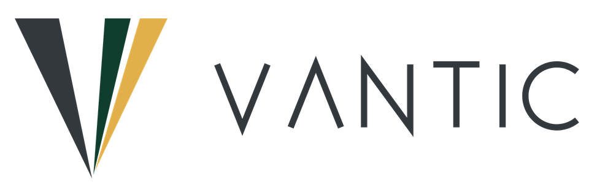

Strategie und Technologie
Richtung klären, Prioritäten setzen.
Strategie entwickeln oder überprüfen, das Geschäftsmodell im Licht von KI weiterdenken und die Umsetzung mit klaren Zielen planen.

Beratung für Schweizer KMU
Vantic begleitet Geschäftsleitungen und Verwaltungsräte bei strategischen Neuausrichtungen, Reorganisationen und Kulturwandel. Dabei behandle ich Strategie, Organisation und Kultur nicht in getrennten Mandaten, sondern in einem durchgängigen Ansatz.
Meistens liegt es nicht an der Idee, sondern daran, dass nur eine Ebene bearbeitet wurde.
Klassische Strategieberatungen hören oft bei der Struktur auf. Leadership- und Kulturprogrammen fehlt häufig der strategische Unterbau.
Ich verbinde beides. Wir klären, wohin dein Unternehmen will, wie es dafür aufgestellt sein muss und was Führung und Kultur dazu beitragen. Und zwar gleichzeitig, damit der Wandel auf allen drei Ebenen getragen wird.
Drei Ebenen, die bei Vantic zusammengehören. Du kannst bei einer beginnen, wir behalten die anderen beiden immer im Blick.
Richtung klären, Prioritäten setzen.
Strategie entwickeln oder überprüfen, das Geschäftsmodell im Licht von KI weiterdenken und die Umsetzung mit klaren Zielen planen.
Strukturen, die zur Strategie passen.
Organisation gestalten, Rollen und neue Jobprofile definieren, Abläufe vereinfachen und Veränderungen so begleiten, dass sie im Alltag ankommen.
Führung stärken, Kultur bewusst gestalten.
Leadership-Entwicklung, Kulturprogramme und der Aufbau neuer Kompetenzen, damit deine Mitarbeitenden den Wandel mittragen und mitwachsen.
Change Management ist bei Vantic kein eigenes Paket, sondern zieht sich durch alle drei Ebenen. Auf Wunsch begleite ich Geschäftsleitung und Verwaltungsrat auch als Sparringpartner.
Jedes KMU ist anders. Ich beginne bei deiner Situation, nicht bei einem Standardrezept.
Pragmatisch und umsetzbar, ohne Grossprojekt und Folienberge.
Wer betroffen ist, soll mitgestalten können. Nicht über die Köpfe hinweg.
Ziel ist, dass dein Unternehmen es danach selbst kann.
Ich bin Daniel Fritz, Gründer von Vantic. Gelernt habe ich Tiefbauzeichner, über die CAD-Systeme bin ich in die IT gekommen. Irgendwann habe ich gemerkt, dass mich der Mensch hinter der Technologie mehr interessiert als die Technologie selbst. Das war mein Anstoss, in die Führung zu wechseln.
Seither habe ich technische Teams geführt, als Teamleiter, als Leiter mehrerer Teams und als Abteilungsleiter. Als Product Manager in einem agilen Umfeld habe ich danach eine Organisation mit über 300 Menschen mitgeführt und mitgestaltet. Ich kenne Organisationen und ihre Führung deshalb aus klassischen und aus agilen Systemen, und zwar von innen.
Begleitet haben mich ein Nachdiplomstudium in Betriebswirtschaft HF und ein Executive MBA in General Management an der HWZ. Weiterlernen gehört für mich dazu, überall dort, wo ich für mich und meine Kunden einen Mehrwert sehe, und vor allem dort, wo meine Neugier geweckt wird.
Ein erstes Gespräch ist unverbindlich. Erzähl mir, wo dein Unternehmen steht und wohin es will.